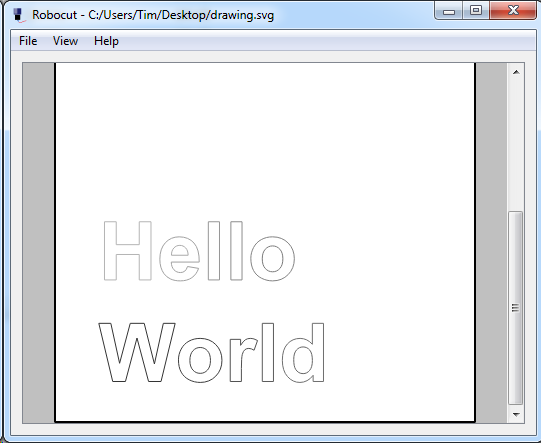

Robocut
Overview
Robocut is a simple program to control Craft Robo and other similar vinyl cutters. It takes an SVG file as input and sends it to the vinyl cutter for cutting. The program uses the Qt GUI toolkit and is available for Window, OSX and Linux. It is very simple but gets the job done. However there are some known issues.
History
Robocut was originally written by Tim Hutt. It was later maintained an improved by Markus Schulz.
Download
Download binaries for:
On Ubuntu you can do
apt-get install robocutor build from source (dependencies are libusb-1.0 and Qt 5). Add yourself to the lp group.
On Windows you must get a libusb-compatible driver for your device. The easiest way is to use Zadig. Run it, and select your device (you may need to go to Options->List all Devices). Then install the WinUSB driver.
Troubleshooting
Known Issues
- On OSX, the pressure settings sometimes gets reset to 1 for no apparent reason.
- It currently crashes if you feed it an SVG containing raster data. You probably don't want to do that anyway.
- Sometimes the cutter freezes mid-cut. I'm not sure if this is an issue with the cutter or the software (possibly a full buffer somewhere?).
- It can't really handle SVG font objects. You must convert them to paths before exporting the SVG.
More information is available in the Readme.md (see Github).